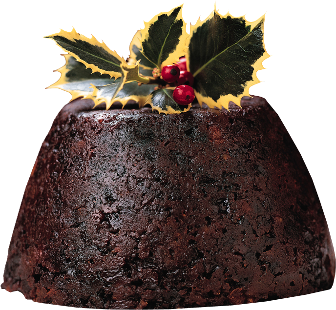
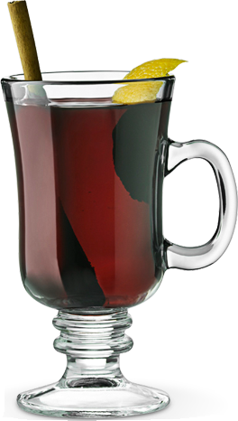
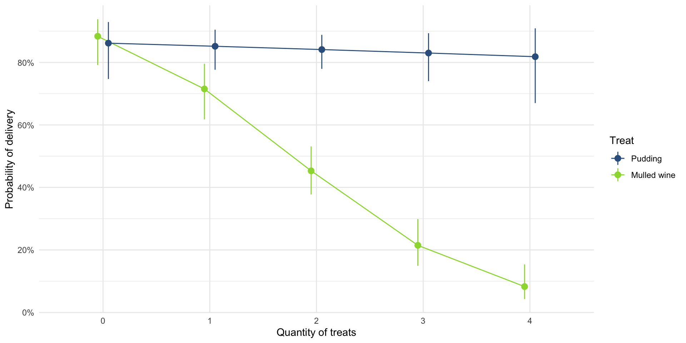

Categorical outcomes
Logistic regression
University of Sussex


|


Load and Look

Interpret the parameters
| Parameter | Log-Odds | SE | 95% CI | z | p |
|---|---|---|---|---|---|
| (Intercept) | 1.68 | 0.21 | (1.29, 2.10) | 8.15 | < .001 |
| treat (Mulled wine) | -1.88 | 0.25 | (-2.37, -1.41) | -7.63 | < .001 |

Interpret the odds ratios
| Parameter | Odds Ratio | SE | 95% CI | z | p |
|---|---|---|---|---|---|
| (Intercept) | 5.36 | 1.10 | (3.64, 8.18) | 8.15 | < .001 |
| treat (Mulled wine) | 0.15 | 0.04 | (0.09, 0.24) | -7.63 | < .001 |
Load and Look
Evaluate
| Name | Model | df | df_diff | Chi2 | p |
|---|---|---|---|---|---|
| int_glm | glm | 1 | |||
| treat_glm | glm | 2 | 1 | 68.76 | < .001 |
| quantity_glm | glm | 3 | 1 | 49.79 | < .001 |
| santa_glm | glm | 4 | 1 | 20.52 | < .001 |

Evaluate assumptions
Interpret parameter estimates, CIs and tests
| Parameter | Log-Odds | SE | 95% CI | z | p |
|---|---|---|---|---|---|
| (Intercept) | 1.83 | 0.38 | (1.13, 2.63) | 4.80 | < .001 |
| treat (Mulled wine) | 0.20 | 0.52 | (-0.83, 1.22) | 0.38 | 0.701 |
| quantity | -0.08 | 0.17 | (-0.41, 0.25) | -0.48 | 0.629 |
| treat (Mulled wine) × quantity | -1.03 | 0.23 | (-1.49, -0.58) | -4.45 | < .001 |
Interpret parameter estimates, CIs and tests
| Parameter | Log-Odds | SE | 95% CI | z | p |
|---|---|---|---|---|---|
| (Intercept) | 1.83 | 0.38 | (1.13, 2.63) | 4.80 | < .001 |
| quantity | -0.08 | 0.17 | (-0.41, 0.25) | -0.48 | 0.629 |


\[ \begin{aligned} b_\text{wine} − b_\text{pudding} &= −1.11−(−0.08) \\ &= −1.03 \end{aligned} \]
I[nterpret odds ratios]{txt_white}
| Parameter | Odds Ratio | SE | 95% CI | z | p |
|---|---|---|---|---|---|
| (Intercept) | 6.23 | 2.37 | (3.08, 13.86) | 4.80 | < .001 |
| treat (Mulled wine) | 1.22 | 0.63 | (0.43, 3.37) | 0.38 | 0.701 |
| quantity | 0.92 | 0.15 | (0.66, 1.28) | -0.48 | 0.629 |
| treat (Mulled wine) × quantity | 0.36 | 0.08 | (0.23, 0.56) | -4.45 | < .001 |
Interpret parameter estimates, CIs and tests
| Parameter | Log-Odds | SE | 95% CI | z | p |
|---|---|---|---|---|---|
| (Intercept) | 1.83 | 0.38 | (1.13, 2.63) | 4.80 | < .001 |
| quantity | -0.08 | 0.17 | (-0.41, 0.25) | -0.48 | 0.629 |
\[ \begin{aligned} b_\text{wine} − b_\text{pudding} &= −1.11−(−0.08) \\ &= −1.03 \end{aligned} \]
\[ \begin{aligned} \exp(b)_\text{difference} &= e^{−1.03} \\ &= 0.36 \end{aligned} \]
Visualize
santa_probs <- estimate_means(santa_glm, by = c("quantity", "treat"))
plot(santa_probs) +
scale_colour_viridis_d(begin = 0.3, end = 0.85) +
scale_fill_viridis_d(begin = 0.3, end = 0.85) +
labs(x = "Quantity of treats", y = "Probability of delivery", colour = "Treat", fill = "Treat") +
theme_minimal()